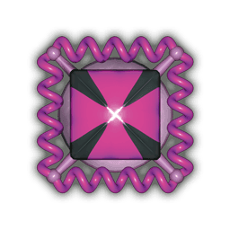
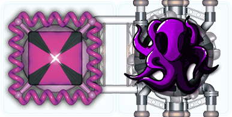

Alien-Lebenserhaltungssysteme
 Die braunen und lila Bauteile stellen Lebenserhaltungssysteme für Aliens dar. Damit ein Lebenserhaltungssystem eine Wirkung erzielt, muss es direkt an eine Kabine angeschlossen sein. Dadurch wird die Kabine für ein Alien der entsprechenden Farbe bewohnbar. Ausnahme: Du darfst kein Alien auf dein Startbauteil setzen, die Pilotenkabine. Menschen brauchen keine besonderen Versorgungsmodule und dürfen sich in einer beliebigen Kabine aufhalten.
Die braunen und lila Bauteile stellen Lebenserhaltungssysteme für Aliens dar. Damit ein Lebenserhaltungssystem eine Wirkung erzielt, muss es direkt an eine Kabine angeschlossen sein. Dadurch wird die Kabine für ein Alien der entsprechenden Farbe bewohnbar. Ausnahme: Du darfst kein Alien auf dein Startbauteil setzen, die Pilotenkabine. Menschen brauchen keine besonderen Versorgungsmodule und dürfen sich in einer beliebigen Kabine aufhalten.
Die Spieler wählen aus, ob sie wirklich Aliens mitnehmen wollen, bevor das Schiff startet.



Alien-Fähigkeiten
Aliens sind Besatzungsmitglieder und werden auch als solche bei der Kampfzone oder der verlassenen Station gezählt. Du kannst sie auch zu einem verlassenen Schiff schicken oder an Sklavenhändler geben. Der Nachteil, ein Alien an Bord zu haben, ist, dass es den Platz von 2 Menschen benötigt. Es gibt aber natürlich auch ein paar Vorteile:
Lila Aliens sind eine kriegslüsterne Speizies. Wenn du ein lila Alien an Bord hast, bekommst du +2 für die Kanonenstärke. (Wenn deine Kanonenstärke ohne Alien 0 wäre, entfällt dieser Bonus allerdings. Es kann eine Weltraumschlacht nun mal nicht mit seinen bloßen Tentakeln ausfechten.)
Braune Aliens sind gute Mechaniker. Wenn du ein braunes Alien an Bord hast, bekommst du +2 für die Motorenstärke. (Wenn deine Motorenstärke ohne Alien 0 wäre, entfällt dieser Bonus allerdings. Es kann nun mal nicht einfach rausgehen und schieben.)
Treffer bei Alien-Lebenserhaltungssystemen
Wenn dein Schiff ein Lebenserhaltungssystem verliert und dabei ein Alien in einer unversorgten Kabine übrig bleibt, ist dieses Alien verloren. (Es verlässt dein Schiff natürlich sofort in einer Rettungskapsel.)